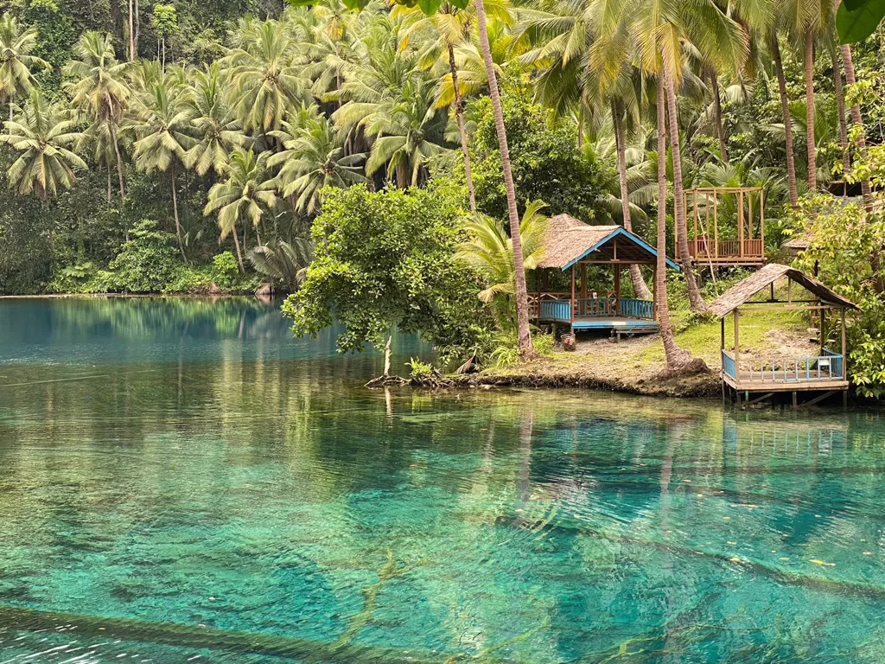
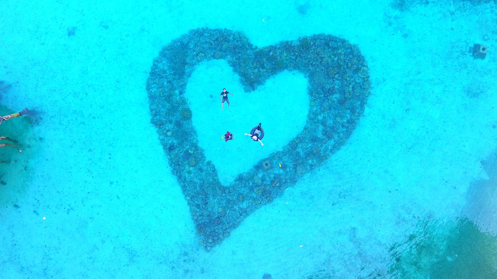
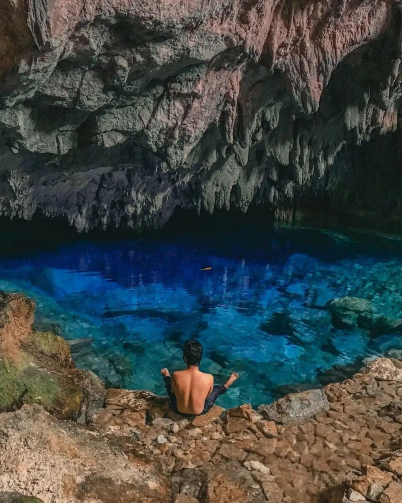

Lokasi Wisata Terbaik
Kabupaten Banggai Kepulauan

Danau Paisu Pok
Danau
Danau sebening kaca yang keasriannya tetap terjaga di Kabupaten Banggai Kepulauan, Sulawesi Tengah.

Pantai Teduang
Pantai
Pantai dengan keunikan karang berbentuk hati dan bunga di Kabupaten Banggai Kepulaun, Sulawesi Tengah.

Gua Susundeng
Gua
Gua yang dengan air yang jernih, dianggap sebagai tempat suci atau tempat bersejarah dalam mitologi lokal di Kabupaten Banggai Kepulauan, Sulawesi Tengah.